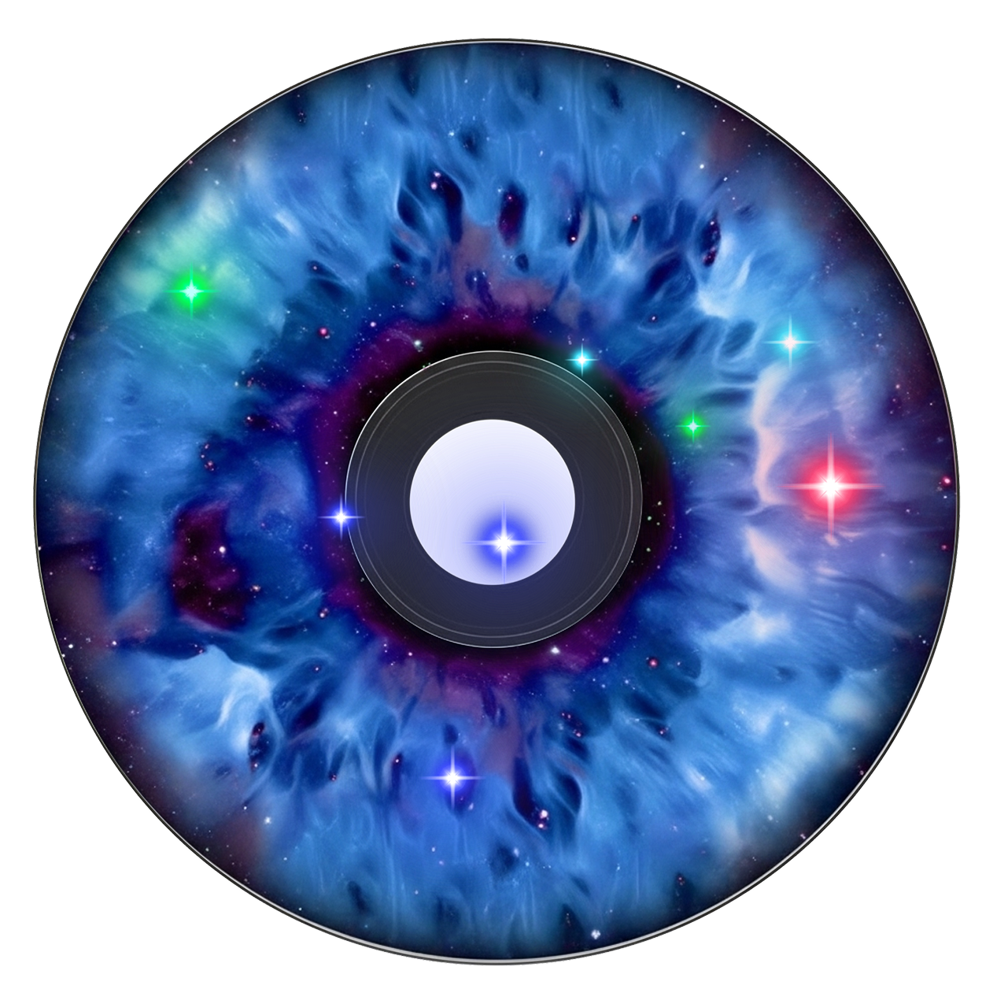

⚙️
나만의 매력 벨소리 생성하기
🎵 생성된 음악이 여기에 표시됩니다
매력을 선택하고 음악을 생성해보세요

▶
0:00
0:00
아래로 스크롤하여 매력을 선택하세요
↓
이름
벨소리 길이:
1분 00초
매력 선택
+
매력 추가
🎵
음악 생성하기
✨
3D 별자리에 추가
초기화
JSON 내보내기
JSON 불러오기
설정
×
API 엔드포인트
설정 저장
🎵
중앙 관리 서비스
• API 키는 서버에서 중앙 관리됩니다
• 무제한으로 음악을 생성할 수 있습니다
• 매력을 조합해서 나만의 벨소리를 만들어보세요
매력 선택하기
×
카테고리를 클릭하면 세부 매력이 표시됩니다.